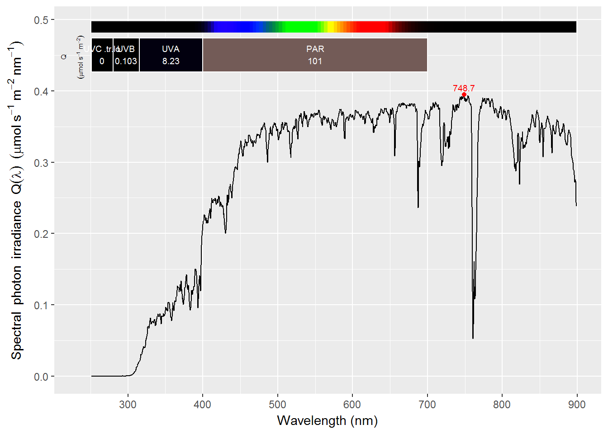
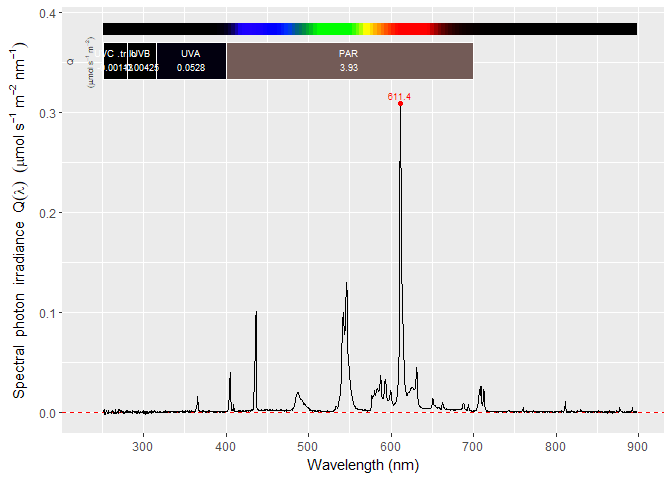
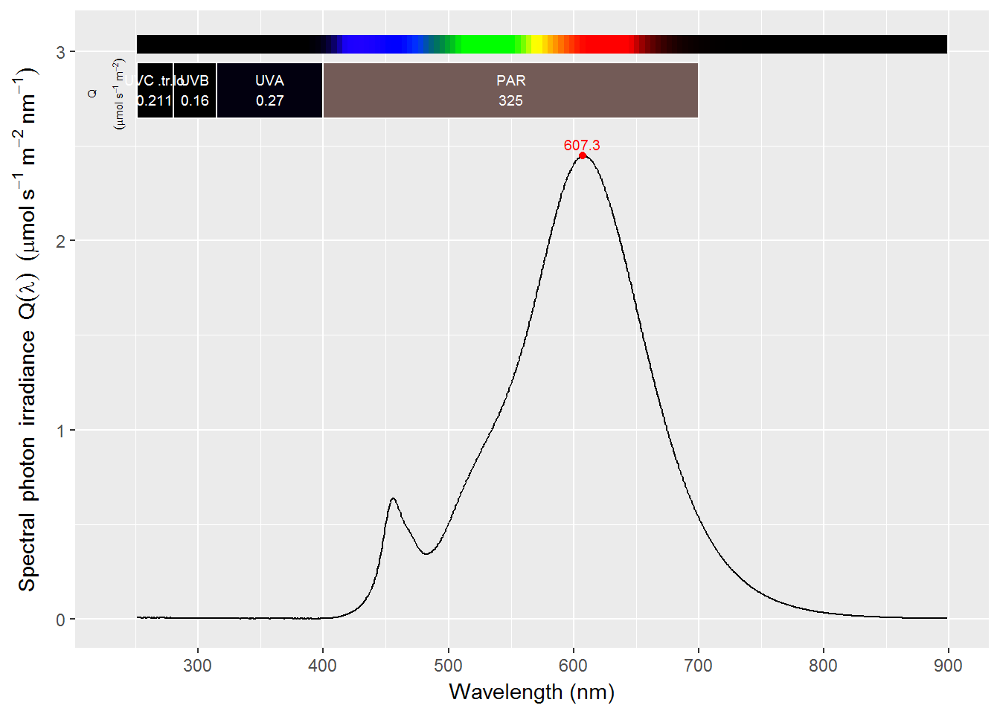
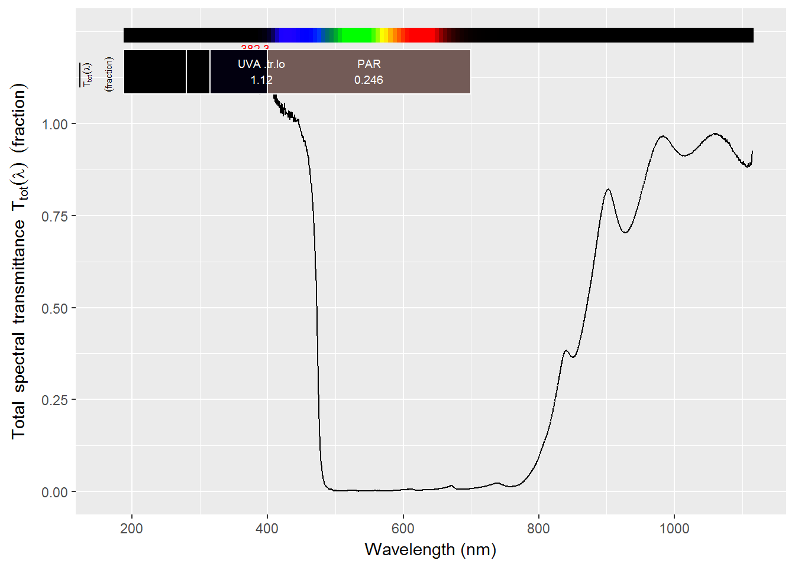
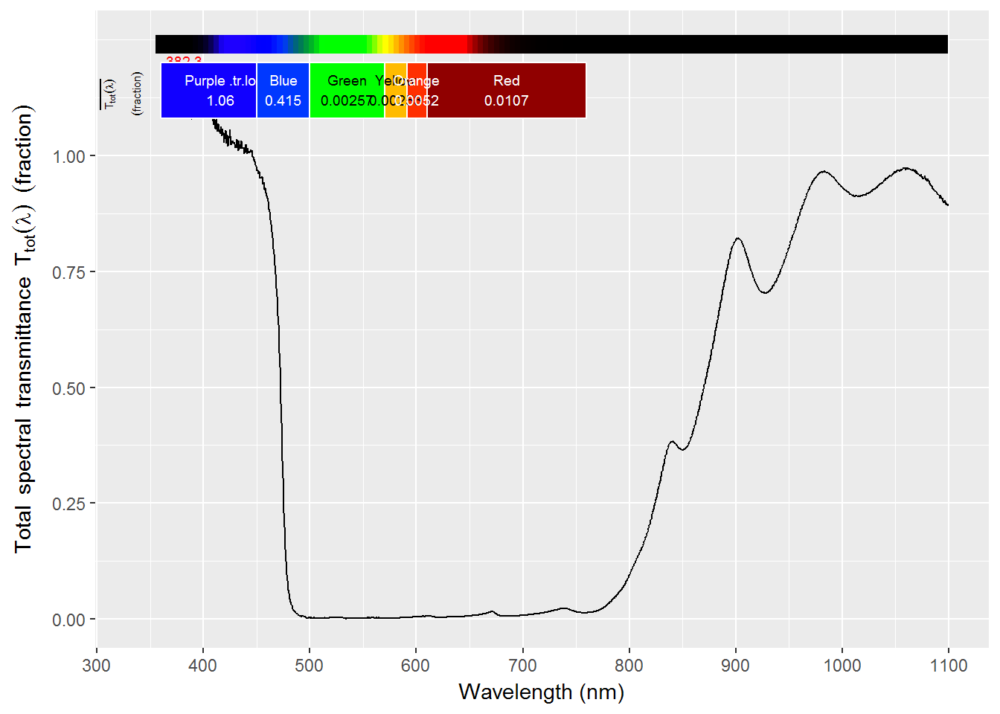
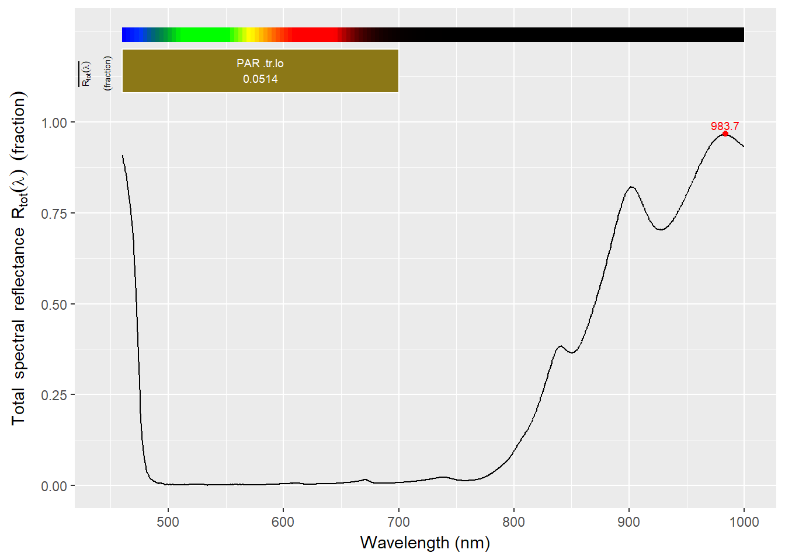

ooacquire 0.1.3.9000In this package we define higher-level functions using packages ‘rOmniDriver’ and the ‘r4photobiology’ suite as bases. These functions conform a sort of “grammar for spectral data acquisition”. We provide a separate function for each conceptual step in the process leading from raw counts to final spectral data—e.g. spectral irradiance. Some higher level functions are included as well, mainly as examples of how to implement some protocols.
The package includes functions for direct data acquisition and near real-time processing of spectra, plus functions that read raw-detector-counts and instrument settings from text files output by the SpectraSuite program from Ocean Optics. After acquisition or file reading the processing of the raw spectral data is identical in both cases.
For data acquisition, the initial steps are opening a connection to an instrument and retrieving a descriptor including model type, optical configuration and possibly calibration data from its non-volatile memory. These first steps in most cases are needed only at the start the R session where data will be acquired. The drivers from Ocean Optics support multichannel instruments and simultaneous connection to multiple spectrometers. This is also supported by this package.
The steps for the acquisition of one raw spectrum are to 1) define the settings to be used, 2) optionally adjust or tune some of these settings automatically, 3) acquire the spectrum, 4) convert the raw counts into linearised counts per second.
In most cases we need acquire more than one raw spectrum, frequently following a certain protocol. There are two possibilities: a) they are conceptually a single observation, such as multiple scans to be averaged to reduce noise or acquired with different integration times (bracketing) and to be merged to increase the dynamic range, and b) sets of spectra in which each spectrum represents a different observation, such as a ‘measurement’ spectrum and a ‘dark’ spectrum to be used to correct it. The distinction may be not that easy to grasp, but in case a) we are measuring a single thing, what we are measuring remains unchanged for all spectra acquired in a set—e.e. we are measuring repeatedly, possibly changing the instrument settings. In case b), although the different spectra may contribute to a single processed spectrum, they are based on measuring a different thing, say a light source and a corresponding dark reading.
In case a) all the acquired raw spectra are stored as columns in the same raw_spct object, while in case b) the different conceptual spectra are each stored in a separate raw_spct object, member of a raw_mspct collection of spectra object. As a) and b) are usually combined, this approach allows and easy distinction of the two situations, and greatly simplifies the coding of later data processing steps.
When spectral data are acquired with other software and read from files into R, this same approach is used for raw data storage. The role of the different files is determined by the structure of a named list used as argument. Files do not contain a full descriptor of the instrument and consequently the instrument descriptor need to be supplied as an additional argument.
Following the approach of the ‘r4photobiology’ suite, we store all available metadata as attributes to the same objects where the acquired spectral data themselves are stored. The stored metadata includes a descriptor of the instrument and the instrument settings used. These attributes are an addition to metadata that is normally held in spectral objects of classes defined in package ‘photobiology’, such as time, location, and label for the measured data. Furthermore, metadata is added at each step, allowing the tracing of the origin and processing of the data. This allows the functions to detect mistakes like an user attempting to linearise raw-counts data that have been already linearised. This safeguard works even for data linearised in the spectrometer software and read from files.
In all cases a wavelength calibration is used to map the pixels to wavelengths. Wavelength calibration can be that retrieved from the instruments’ non-volatile memory or supplied directly by to user. Different further steps are needed depending on the quantity measured and method. In the case of irradiance, a calibration needs to be applied to the counts-per-second spectral data. Usually calibration data is also stored in the non-volatile memory of the spectrometer, but in some cases it is convenient to apply special algorithms or calibration data that cannot be retrieved from the instrument itself. Functions for both the normal and special cases are also included in the package. Here it is important to remember that a calibration will be valid only if the raw spectral data processing steps are exactly the same for the spectral data used for calibration and the measured data. This in practice means that calibrations supplied by instrument manufacturers will almost never be usable if you process the measured data with this pacakge. You will need the reference lamp spectrum and the raw detector-counts data for the calibration event, to be able to calculate valid calibration coefficients for the best data-processing protocol you adopt for your actual measurements. On the other hand, this also means that the functions in the present package, as each of them fulfils a simple and well defined step of data processing, are ideal for in silico testing of alternative data processing approaches and measuring protocols.
| function name | role |
|---|---|
| data acquisition | |
start_session |
search for connected instruments and obtain a handle to the driver |
end_session |
close all connections and release handle |
list_instruments |
list all connected instruments |
get_oo_descriptor |
get a descriptor for one of the possibly several connected instruments |
set_descriptor_wl |
replace the wavelength values |
set_descriptor_bad_pixs |
replace the indexes to bad array detector pixels |
set_descriptor_nl |
replace the function used to correct for array non-linearity |
set_descriptor_calib_mult |
replace the vector of irradiance calibration multipliers |
set_descriptor_integ_time |
replace the vector defining the range of valid integration times |
get_oo_settings |
query the instrument to obtain its current settings |
acq_settings |
build a list of setting values |
tune_acq_settings |
tune the integration time and number of scans to the current radiation conditions |
acq_raw_spct |
take one measurement (data point) |
acq_raw_mspct |
take a sequence of spectral measurements (several data points) |
acq_irrad_interactive |
interactively acquire spectral irradiance and save data and plots to disk |
acq_trans_interactive |
interactively acquire spectral transmittance and save data and plots to disk |
| data procesing | |
trim_counts |
replace values from saturated array pixels with NAs |
bleed_nas |
replace values from pixels neighbouring NAs with NAs |
linearize_counts |
linearize the raw counts |
skip_bad_pixs |
replace bad pixels with interpolated raw counts |
ref_correction |
subtract a reference (e.g. dark signal) from a measured spectrum |
photobiology::fshift |
can be used to subtract a region of the same scan as an internal “dark” reference |
raw2cps |
methods to convert raw counts into counts per second. The method specialization for raw_spct returns a cps_spct object |
merge_cps |
method to do HDR merge of bracketed scans |
slit_function_correction |
apply a correction for the ‘long tails’ of the slit function |
filter_correction |
apply a correction for stray light based on the use of UV-cut-off or other selective filters |
no_filter_correction |
apply a correction for stray light not based on the use of UV-cut-off or other selective filters |
uvb_corrections |
apply corrections for reducing the impact of stray light and slit function on counts-per-second estimates. This function intelligently adjusts the processing method used based on the spectral data item supplied as x argument |
which_descriptor |
select an instrument descriptor from a list based on the dates between which a calibration is valid |
photobiology::cps2irrad |
methods to convert counts per second into spectral irradiance |
photobiology::cps2Tfr |
methods to convert counts per second into transmittance |
photobiology::cps2Rfr |
methods to convert counts per second into reflectance |
| calibration | |
compute_irrad_calibration |
compute irradiance calibration multipliers from raw counts data and polynomial coeffcicientes from standard lamp certificates using any of the different measuring protocols and data processing methods implemented in the package |
| file reading | |
read_oo_ssdata |
read data from a ‘SpectraSuite’ output file with raw-counts data |
read_oo_pidata |
read data from a ‘XXXXXXXXX’ output file with raw-counts data from a Raspberry Pi board |
read_files2mspct |
read multiple data files and assemble from them into a raw_maspct object compatible to that obtained through direct data acquisition |
set_oo_ssdata_settings |
set the instrument settings attributes by decoding the header of text files saved from SpectraSuite |
set_oo_ssdata_descriptor |
set the instrument descriptor attribute by decoding the header of text files saved from SpectraSuite and optionally merging these data incomplete with a descriptor supplied as argument |
merge_raw_mspct |
Merge raw_spct objects members of a single raw_mspct object into a raw_spct object with multiple columns |
| high level method | |
raw2corr_cps |
higher level function that returns corrected counts per second useful for calculating spectral reflectance and spectral transmittamce. |
s_irrad_corrected |
high-level method with specializations for files and raw_mspct objects returning spectral irradiance in a source_spct object. |
The workflow consists in several steps. First all one needs to start a new connection to the driver by means of start_session() and disconnect at the end of the measuring session with end_session(). To learn which instruments are connected and which numerical index pints to each one uses list_instruments(). The indexes start at zero, so if there is only one instrument connected one can rely on its index being 0. The same applies to channels, for multichannel instruments.
Once we know which instrument we want to address and its index, we must create an instrument descriptor with function get_oo_descriptor(). From this point onwards we will use this descriptor to address the instrument. The descriptor contains information about the instrument obtained initially by querying it. Instruments may have some pieces of information unavailable (e.g. not stored in there non-volatile memory), or the user may want to override the available information with that from a more recent or better calibration. set_descriptor_nl(), set_descriptor_wl(), set_descriptor_bad_pixs() and set_descripto_integ_time() can be used to set or override the function used for correcting for the non-linearity of the sensors, the wavelength values corresponding to each pixel, a vector of indexes (starting at one) corresponding to bad pixels in the array (pixel known to return bad data) and the range of integration times in ms that are valid input for the instrument. __It is always good to check against the specifications of the instrument whether the values stored in its
As there are several settings needed for the acquisition of a spectrum, we will store sets of settings into objects that can reuse and modify. To create these objects we use function acq_settings(). The settings include both actual parameters that need to be set in the instrument by sending commands and parameters that our software may use to calculate suitable values for such settings. This function is quite flexible and allows the use of bracketing. In other words a single observation can consist in more than one data acquisition, each of these using different setting, with the aim of merging them into a single spectrum.
Some settings need to be adjusted according to the current irradiance level so as to make full use of the dynamic range of the instrument. For this we use function tune_acq_settings(), which updates the settings stored in a list as created by acq_settings() or as returned by a previous call to tune_acq_settings().
Function get_oo_settings() can be used to query the instrument for the settings currently in use.
To acquire spectral data we can use one of two functions, acq_raw_spct() to acquire a single spectrum, or acq_raw_mspct() to acquire a collection of spectra according to a user supplied protocol. In cases when we use HDR (bracketing) or overexpose some part of the spectrum the first data-processing step is to replace the data from the saturated pixels with NA’s using function trim_counts()—as the settings used in the acquisition and descriptor of the instrument are stored in the spectral object, this function needs only to be supplied a raw_spct object, unless the user wants to discard more pixels. As pixels neighbouring overexposed pixels are disturbed by the charge overflowing from the saturated wells, these pixels need also to be set as NAs by means of function bleed_nas. If the instrument array contains bad pixels, it is best to replace the data produced by them at this early stage. Function skip_bad_pixs() is useful here and it replaces the bad data with the average of the readings from the neighbouring pixels. The third step after data acquisition, unless the linearisation is done by the instrument, is to linearize the acquired valid raw counts by means of method linearize_counts(). The non-linearity of the detector is related to how “full” are its electron wells, irrespective of whether the electrons originate from measured photons or any other source, consequently the linearisation function should be applied to raw detector counts at this point.
CCD arrays, especially if not cooled, have a significant dark signal. The best approach to remove this background signal is to measure it—to take a spectral reading with the array not exposed to light. This dark spectrum is them subtracted from the one measured in the light. An alternative, with advantages and disadvantages, is to use the signal from pixels corresponding to wavelengths known a priori to be absent in the light source being measured. This calculation is done with the linearized raw counts by means of method photobiology::fshift() with a pair of suitable wavelength values for range. In the case of measuring transmittance (and absorbance) and reflectance we need to also measure a clear and white reference respectively.
The raw counts after linearisation followed by subtraction of the dark signal are still expressed in number of counts per integration period. As the duration of the integration time is variable, we need to re-express the raw counts as counts-per-second (cps). Once more, the integration time used for the acquisition is stored in the cps_spct object and the conversion can be done by method raw2cps() with just this object as input. The values returned, expressed as counts per second, are linearly proportional to the rate at which photons imping each detector pixel. Be aware that as detector quantum yield depends on wavelength, a different multiplier is needed for each pixel to be able to convert the counts-per-second data to units of photons-per-unit-time.
If bracketing for HDR has been used during acquisition, at this point, the values of the cps for each of the bracketed spectra are expressed on the same scale. This means that they can simply be spliced together. The simplest approach possible, used by method merge_cps() is to replace the clipped data from saturated pixels (and possibly their neighbours) in the longer integration with data from the same pixels obtained with shorter integration. As we used trim_counts() and bleed_nas() on the raw counts, those saturated pixels have already been replaced with NA’s making the operation easy to implement.
After the preceding steps, if the cps or merged cps values are from an irradiance measurement the spectral data are now ready to be multiplied by the calibration constants corresponding to each individual pixel. If the values are to be used for calculation of transmittance or reflectance, all what is left to do is simple arithmetic.
The slit function describes how monochromatic light “reaches” adjacent pixels which should have been in total darkness had the monochromator been perfect. This is a subtle correction, which will affect only regions of a spectrum where the change in signal strength with wavelength is very steep, such as the UV region of a solar spectrum or a very narrow absorption peak.
The slit function of a spectrometer can be estimated by measuring laser beams at different wavelengths and fitting suitable functions to the observed data. Here we explain how to apply such a function. The slit function is the result of an optical effect, and consequently independent of integration time and other detector settings. Consequently, can be applied to either the merged cps values or after application of a calibration. Obviously, the stage at which the slit correction is applied needs to match the stage of processing of the data used for estimating the slit function.
The correction to apply to a given pixel depends on the readings of nearby pixels. Some authors recommend to apply this correction recursively, however, we follow the simple approach of applying it only once as an approximation.
Irradiance estimates are affected by calibration errors, dark electrical noise, dynamic range and stray light. In this section we assume that the available calibration is valid. Random electrical and thermal noise can be averaged out by repeated measurement. Dynamic range depends both on the noise floor and on the resolution of the anologue to digital conversion electronics of the instrument. A way to increase the effective dynamic range is be bracketing intergartion time and splicing/merging the resulting spectra. This is what in digital photography is called HDR or high dynamic range images obtained by merging sets of images obtained at a series of different exposure values. In addition to improved optical design, stray light can be corrected for if it is possible to measure it by itself. This can be acieved by using an optical filter that tranmits radiation of wavelengths causing stray light, but that blocks radiation of wavelengths we are interested in. An additional correction that can be applied is for the slit function of the instrument. The slit function describes how a single wavelength peak (e.g. similar to a laser beam) broadens at the array detector.
Which corrections are needed and which make little difference depends on the type of instrument, the characterisitcs of the light source and the region of the spectrum we are interseted in. Consequently, depending on the circumstances we may want to use different measurement propocols. The high-level functions in the package “guess” the protocol from the set of file names or set of spectra passed as argument. For irradiance calculations three named members are recognized as different measurements in a protocol: "light", "filter" and "dark", each of these can be bracketed for integration time. In the case of file names for any of these three members, a vector of file names, is interpreted as a bracketed measurement. In the case of collections of spectra, raw_spct with multiple counts columns are interpreted as bracketed. Of course, at least a "light" member is required as input. If it is missing an empty source_spct object is returned.
| Protocol |
light spct |
filter spct |
dark spct |
signal level | signal range | speed |
|---|---|---|---|---|---|---|
| minimal | short | - | - | high | < 5e1 ?? | 1/1 |
| normal | short | - | short | high | < 1e2 | 1/2 |
| corrected | short | short | short | medium | < 1e3 | 1/3 |
| cor. brkt | short + long | short + long | short + long | low | < 1e4 | 1/33 |
We first load the packages to be used, and set the working directory to the location of the example data files included in the package.
library(photobiology)
library(photobiologyWavebands)
library(ggspectra)
library(ooacquire)The first example is the one listed as “minimal” in the table above, we use a single spectrum, using for the dark correction pixels expected to receive no true excitation. For example, those in the UVC region of the spectrum when the light source is sunlight at ground level.
We set a list of file names to be read, with members named according to their role in the measuring protocol.
file_names <- list(light = "light-short.txt")We subsequently compute the spectral irradiance.
one_file.spct <-
s_irrad_corrected(x = file_names,
descriptor = which_descriptor("2016-10-11" ,
MAYP11278_descriptors),
correction.method = MAYP11278_ylianttila.mthd)## Descriptor cal_2016a selected for 2016-10-11As these measurements are of sunlight in a greenhouse we can remove noise from regions known to be zero by replacing with zeros all spectral irradiance values form wavelengths shorter than 290 nm.
one_file.spct <- trim_wl(one_file.spct,
range = c(290, NA),
use.hinges = FALSE,
fill = 0)one_file.spct## Object: source_spct [1,421 x 2]
## Wavelength range 251.16 to 898.81 nm, step 0.43 to 0.48 nm
## Label: light: light-short.txt
## Measured on 2016-10-11 11:23:05 UTC
## Time unit 1s
##
## # A tibble: 1,421 × 2
## w.length s.e.irrad
## * <dbl> <dbl>
## 1 251.16 0
## 2 251.63 0
## 3 252.10 0
## 4 252.58 0
## 5 253.05 0
## 6 253.53 0
## 7 254.00 0
## 8 254.48 0
## 9 254.95 0
## 10 255.43 0
## # ... with 1,411 more rowsWe plot the result from “minimal” protocol.
plot(one_file.spct, unit.out = "photon")getWhenMeasured(one_file.spct)## [1] "2016-10-11 11:23:05 UTC"cat(getWhatMeasured(one_file.spct))## light: light-short.txtgetWhereMeasured(one_file.spct)## lon lat
## 1 NA NAcat(comment(one_file.spct))## Processed on 2017-05-10
## with 's_irrad_corrected()' from 'ooacquire' ver. 0.1.3.9000
##
## from files:
## light: light-short.txtgetInstrDesc(one_file.spct)## Data acquired with 'MayaPro2000' s.n. MAYP11278
## grating 'HC1', slit '010s'getInstrSettings(one_file.spct)## integ. time (s): 1.6
## total time (s): 4.8
## counts @ peak (% of max): 76At the other extreme, we can use bracketing, a dark measurement, plus a measurement with a UV-absorbing filter (polycarbonate). The UV absorbing filter allows us to estimate stray light in the UV region. This is the protocol listed as corrected and bracketed (cor. brkt.) in the table above.
We go exactly through the same steps as before, the only difference is the list of file names passed as argument to parameter x.
file_names <- list(light = c("light-short.txt",
"light-long.txt"),
filter = "flt-long.txt",
dark = c("dark-short.txt",
"dark-long.txt"))five_files.spct <-
s_irrad_corrected(x = file_names,
descriptor = which_descriptor("2016-10-11",
MAYP11278_descriptors),
correction.method = MAYP11278_ylianttila.mthd)## Descriptor cal_2016a selected for 2016-10-11As these measurements are of sunlight in a greenhouse we can remove noise from regions known to be zero as we did above.
# force to zero wavelengths < 290 nm use only for sunlight, and after checking plot
five_files.spct <- trim_wl(five_files.spct,
range = c(290, NA),
use.hinges = FALSE,
fill = 0)five_files.spct## Object: source_spct [1,421 x 2]
## Wavelength range 251.16 to 898.81 nm, step 0.43 to 0.48 nm
## Label: light: light-short.txt, light-long.txt
## filter: flt-long.txt
## dark: dark-short.txt, dark-long.txt
## Measured on 2016-10-11 11:23:05 UTC
## Time unit 1s
##
## # A tibble: 1,421 × 2
## w.length s.e.irrad
## * <dbl> <dbl>
## 1 251.16 0
## 2 251.63 0
## 3 252.10 0
## 4 252.58 0
## 5 253.05 0
## 6 253.53 0
## 7 254.00 0
## 8 254.48 0
## 9 254.95 0
## 10 255.43 0
## # ... with 1,411 more rowsWe can now plot the result from complex protocol.
plot(five_files.spct, unit.out = "photon")
getWhenMeasured(five_files.spct)## [1] "2016-10-11 11:23:05 UTC"getWhatMeasured(five_files.spct)## [1] "light: light-short.txt, light-long.txt\nfilter: flt-long.txt\ndark: dark-short.txt, dark-long.txt"getWhereMeasured(five_files.spct)## lon lat
## 1 NA NAcat(comment(five_files.spct))## Processed on 2017-05-10
## with 's_irrad_corrected()' from 'ooacquire' ver. 0.1.3.9000
##
## from files:
## light: light-short.txt, light-long.txt
## filter: flt-long.txt
## dark: dark-short.txt, dark-long.txtgetInstrDesc(five_files.spct)## Data acquired with 'MayaPro2000' s.n. MAYP11278
## grating 'HC1', slit '010s'getInstrSettings(five_files.spct)## integ. time (s): 1.6, 7
## total time (s): 4.8, 21
## counts @ peak (% of max): 76These data are all from the same set of measurements, as one can apply the calculations for the “minimal” protocol to a subset of the data from the “corrected bracketed” protocol. We calculate the differences of the estimates from the “minimal” protocol compared to the complex one.
(q_irrad(one_file.spct) / q_irrad(five_files.spct) - 1) * 100## Total
## 0.4982588
## attr(,"time.unit")
## [1] "second"
## attr(,"radiation.unit")
## [1] "photon irradiance total"Differences expressed as percentage for different wavelength ranges.
kable(
t((q_irrad(one_file.spct, c(UV_bands(), VIS_bands())) /
q_irrad(five_files.spct, c(UV_bands(), VIS_bands())) - 1) * 100),
digits = 2
)| UVC.ISO.tr.lo | UVB.ISO | UVA.ISO | Purple.ISO | Blue.ISO | Green.ISO | Yellow.ISO | Orange.ISO | Red.ISO |
|---|---|---|---|---|---|---|---|---|
| NaN | 31.52 | -0.69 | 0.33 | 0.5 | 0.48 | 0.46 | 0.48 | 0.47 |
Files output by SpectraSuite and OceanView have different header format, but they can be recognized automatically. Consequently there is no difference in the function calls. The filter measurement is not used as it is not suitable for the source spectrum measured, and would be ignored with a warning.
file_names <- list(light = "light_MAYP112785.txt",
# filter = "filter_MAYP112785.txt",
dark = "dark_MAYP112785.txt")In this case we use a different descriptor definition only because the files acquired with SpectraSuite and OceanView originated from different instruments.
ov_files.raw_mspct <-
ooacquire::read_files2mspct(file_names,
descriptor = which_descriptor("2017-01-05",
MAYP112785_descriptors))## Descriptor cal_2016xa selected for 2017-01-05summary(ov_files.raw_mspct[[1]])## Summary of object: raw_spct [2,068 x 2]
## Wavelength range 198.408 to 1115.677 nm, step 0.406 to 0.472 nm
## Label: File: light_MAYP112785.txt
## Measured on 2017-01-05 14:22:55 UTC
## Data acquired with 'MayaPro2000' s.n. MAYP112785
## grating 'HC1', slit '010'
## integ. time (s): 2
## total time (s): 2
## counts @ peak (% of max): NA
## w.length counts
## Min. : 198.4 Min. : -82.17
## 1st Qu.: 439.5 1st Qu.: 1625.58
## Median : 673.9 Median : 1738.33
## Mean : 668.3 Mean : 2302.09
## 3rd Qu.: 900.0 3rd Qu.: 1972.08
## Max. :1115.7 Max. :46912.83summary(ov_files.raw_mspct[[2]])## Summary of object: raw_spct [2,068 x 2]
## Wavelength range 198.408 to 1115.677 nm, step 0.406 to 0.472 nm
## Label: File: dark_MAYP112785.txt
## Measured on 2017-01-05 14:23:55 UTC
## Data acquired with 'MayaPro2000' s.n. MAYP112785
## grating 'HC1', slit '010'
## integ. time (s): 2
## total time (s): 2
## counts @ peak (% of max): NA
## w.length counts
## Min. : 198.4 Min. : -79.5
## 1st Qu.: 439.5 1st Qu.:1585.2
## Median : 673.9 Median :1661.5
## Mean : 668.3 Mean :1681.7
## 3rd Qu.: 900.0 3rd Qu.:1753.5
## Max. :1115.7 Max. :3665.5In this case we use a different correction.method definition only because the files acquired with SpectraSuite and OceanView originated from different instruments.
ov_files.spct <-
s_irrad_corrected(x = ov_files.raw_mspct,
correction.method = ooacquire::MAYP112785_ylianttila.mthd)## Warning in trim_counts(.): Negative raw counts in data!
## These are not raw detector counts.
## Warning in trim_counts(.): Negative raw counts in data!
## These are not raw detector counts.## Warning in range_check(x, cps.cols): Off-range cps values, min =
## -56.5850587835168, max = 20.8861044118045## Warning in range_check(x, cps.cols): Off-range cps values, min =
## -52.5839216499318, max = 13.3907648317327ov_files.spct <-
s_irrad_corrected(x = file_names,
descriptor = which_descriptor("2017-01-05",
MAYP112785_descriptors),
correction.method = ooacquire::MAYP112785_ylianttila.mthd)## Descriptor cal_2016xa selected for 2017-01-05## Warning in trim_counts(.): Negative raw counts in data!
## These are not raw detector counts.
## Warning in trim_counts(.): Negative raw counts in data!
## These are not raw detector counts.## Warning in range_check(x, cps.cols): Off-range cps values, min =
## -56.5850587835168, max = 20.8861044118045## Warning in range_check(x, cps.cols): Off-range cps values, min =
## -52.5839216499318, max = 13.3907648317327ov_files.spct## Object: source_spct [1,436 x 2]
## Wavelength range 251.116 to 898.589 nm, step 0.428 to 0.47 nm
## Label: light: light_MAYP112785.txt
## dark: dark_MAYP112785.txt
## Measured on 2017-01-05 14:22:55 UTC
## Time unit 1s
##
## # A tibble: 1,436 × 2
## w.length s.e.irrad
## * <dbl> <dbl>
## 1 251.116 -0.0001866098
## 2 251.586 0.0000198477
## 3 252.055 0.0011316948
## 4 252.525 -0.0002764672
## 5 252.994 -0.0009489246
## 6 253.464 -0.0002546838
## 7 253.933 -0.0011313231
## 8 254.403 0.0009336129
## 9 254.872 0.0003924598
## 10 255.341 0.0004984134
## # ... with 1,426 more rowsWe can now plot the result from the OceanView files.
plot(ov_files.spct, unit.out = "photon")
## error!
plot(smooth_spct(ov_files.spct, strength = 5), unit.out = "photon")"raw_mspct" objectsdescriptor <-
which_descriptor(getWhenMeasured(white_LED.raw_mspct$light))
irrad01.spct <-
s_irrad_corrected(x = white_LED.raw_mspct,
descriptor = descriptor,
correction.method = MAYP11278_ylianttila.mthd)## Warning in ooacquire::uvb_corrections(x = x, spct.names = spct.names,
## stray.light.method = correction.method[["stray.light.method"]], : Too low
## cps in filter reference region, setting method to 'simple'.## Warning in filter_correction(x = y[[spct.names["light"]]], flt =
## y[[spct.names["filter"]]], : No stray light correction applied to long end
## of spectrum.irrad01.spct## Object: source_spct [1,421 x 2]
## Wavelength range 251.16 to 898.81 nm, step 0.43 to 0.48 nm
## what label: light
## user.label label: osram06
## Measured on 2016-12-01 10:08:16 UTC
## Time unit 1s
##
## # A tibble: 1,421 × 2
## w.length s.e.irrad
## * <dbl> <dbl>
## 1 251.16 0.004314156
## 2 251.63 0.004184169
## 3 252.10 0.003847835
## 4 252.58 0.004763573
## 5 253.05 0.005094774
## 6 253.53 0.003838450
## 7 254.00 0.004133885
## 8 254.48 0.002904687
## 9 254.95 0.003052997
## 10 255.43 0.003011101
## # ... with 1,411 more rowsplot(irrad01.spct, unit.out = "photon")
getWhenMeasured(irrad01.spct)## [1] "2016-12-01 10:08:16 UTC"getWhereMeasured(irrad01.spct)## lon lat
## 1 NA NAgetWhatMeasured(irrad01.spct)## $what
## [1] "light"
##
## $user.label
## [1] "osram06"cat(comment(irrad01.spct))getInstrDesc(irrad01.spct)## Data acquired with 'MayaPro2000' s.n. MAYP11278
## grating 'HC1', slit '010s'getInstrSettings(irrad01.spct)## integ. time (s): 0.32, 3.2
## total time (s): 5.11, 6.39
## counts @ peak (% of max): 94.3As for irradiance, transmittance estimates are affected by dark electrical noise, dynamic range and stray light. Random electrical and thermal noise can be averaged out by repeated measurement. Dynamic range depends both on the noise floor and on the resolution of the anologue to digital conversion electronics of the instrument. A way to increase the effective dynamic range is bracketing integrartion time and splicing/merging the resulting spectra. This is what in digital photography is called HDR or high dynamic range images obtained by merging sets of images obtained at a series of different exposure values. In addition to improved optical design, stray light can be corrected for if it is possible to measure it by itself. This can be achieved by use of an optical filter that transmits radiation of wavelengths causing stray light, but that blocks radiation of wavelengths we are interested in. An additional correction that can be applied is for the slit function of the instrument. The slit function describes how a single wavelength peak (e.g. similar to a laser beam) broadens at the array detector.
Which corrections are needed and which make little difference depends on the type of instrument, the characterisitcs of the sample being measured and of the light source and the region of the spectrum we are interseted in. Consequently, depending on the circumstances we may want to use different measurement propocols. The high-level functions in the package “guess” the protocol from the set of file names or set of spectra passed as argument. For irradiance calculations three named members are recognized as different measurements in a protocol: "sample", "reference", "filter", and "dark", each of these can be bracketed for integration time. In the case of file names for any of these three members, a vector of file names, is interpreted as a bracketed measurement. In the case of collections of spectra, raw_spct with multiple counts columns are interpreted as bracketed. Of course, at least a "sampel" and "reference" members are required as input. If either or both are missing an empty filter_spct object is returned.
| Protocol |
sample spct |
reference spct |
filter spct |
dark spct |
signal range | speed | |
|---|---|---|---|---|---|---|---|
| minimal | short | short | - | - | < 5e1 ?? | 1/1 | |
| normal | short | short | - | short | < 1e2 | 1/3 | |
| nor. brkt | short + long | short + long | - | short + long | < 1e3 | 1/33 | |
| (corrected) | short | short | short | short | < 1e3 | 1/5 | |
| (cor. brkt) | short + long | short + long | short + long | short | < 5e3 | 1/55 |
The last two prorocols, using a "filter" measurement seem unlikely to be useful in practice, but I intend to do some tests in the future to test this.
The first example is the one listed as “minimal” in the table above, we use two spectra, one for sample and one for reference, using for the dark correction pixels expected to receive no true excitation. For example, those in the UVC region of the spectrum when the light source is sunlight at ground level.
We set a list of file names to be read, with members named according to their role in the measuring protocol.
"raw_mspct" objectA suitable "raw_mspct" can be acquired directly from a spectrometer using functions in this package, or built by reading files obtained using Ocean Optics SpectraSuite software. In the case of spectral objects we can query the measurement date and use it to find an instrument descriptor containing a valid calibration. Although for transmittance calculation the calubration multipliers for irradiance are not used, the calibrated wavelengths are. If the wavelength calibration stored in the spectrometer’s non-volatile memory is valid, it is not necessary to pass a descriptor argument to the function.
descriptor <-
which_descriptor(getWhenMeasured(blue_filter.raw_mspct$sample))
tfr01.spct <-
s_fraction_corrected(x = blue_filter.raw_mspct,
descriptor = descriptor,
correction.method = ooacquire::MAYP11278_ylianttila.mthd,
dyn.range = 3e2)## Warning in range_check(x, strict.range = strict.range): Off-range
## transmittance values [0.00072...1.2] instead of [0..1]
## Warning in range_check(x, strict.range = strict.range): Off-range
## transmittance values [0.00072...1.2] instead of [0..1]tfr01.spct## Object: filter_spct [2,068 x 2]
## Wavelength range 187.82 to 1117.14 nm, step 0.41 to 0.48 nm
## what label: sample
## user.label label: UQG_Blue
## Measured on 2016-11-28 14:46:25 UTC
##
## # A tibble: 2,068 × 2
## w.length Tfr
## <dbl> <dbl>
## 1 187.82 NA
## 2 188.30 NA
## 3 188.78 NA
## 4 189.26 NA
## 5 189.73 NA
## 6 190.21 NA
## 7 190.69 NA
## 8 191.17 NA
## 9 191.64 NA
## 10 192.12 NA
## # ... with 2,058 more rowsplot(tfr01.spct)## Warning: Removed 415 rows containing non-finite values (stat_peaks).
tfr01.spct <- clip_wl(tfr01.spct, range = c(355, 1100))## Off-range transmittance values [0.00072...1.2] instead of [0..1]plot(tfr01.spct, unit.out = "photon", w.band = VIS_bands())## Warning: Removed 58 rows containing non-finite values (stat_peaks).
getWhenMeasured(tfr01.spct)## [1] "2016-11-28 14:46:25 UTC"getWhereMeasured(tfr01.spct)## lon lat
## 1 NA NAgetWhatMeasured(tfr01.spct)## $what
## [1] "sample"
##
## $user.label
## [1] "UQG_Blue"cat(comment(tfr01.spct))getInstrDesc(tfr01.spct)## Data acquired with 'MayaPro2000' s.n. MAYP11278
## grating 'HC1', slit '010s'getInstrSettings(tfr01.spct)## integ. time (s): 0.488, 4
## total time (s): 20, 20
## counts @ peak (% of max): 75raw_mspct object with a known referenceIn contrast to the previous example, we will here assume that the reference is not 100% clear, and that we know its transmittance to be 0.95.
descriptor <-
which_descriptor(getWhenMeasured(blue_filter.raw_mspct$sample))
tfr02.spct <-
s_fraction_corrected(x = blue_filter.raw_mspct,
ref.value = 0.95,
descriptor = descriptor,
correction.method = MAYP11278_ylianttila.mthd,
dyn.range = 3e2)## Warning in range_check(x, strict.range = strict.range): Off-range
## transmittance values [0.00072...1.2] instead of [0..1]
## Warning in range_check(x, strict.range = strict.range): Off-range
## transmittance values [0.00072...1.2] instead of [0..1]plot(tfr02.spct)## Warning: Removed 415 rows containing non-finite values (stat_peaks).In the next example, we use a spectrum to describe the reference’s spectral properties.
In contrast to the previous example where we calculated transmittance, we will here calculate reflectance assuming that the reference is not 100% white, and that we know its spectral reflectance.
descriptor <-
which_descriptor(getWhenMeasured(blue_filter.raw_mspct$sample))
rfr01.spct <-
s_fraction_corrected(x = blue_filter.raw_mspct,
ref.value = as.reflector_spct(white_body.spct) * 0.97,
descriptor = descriptor,
correction.method = MAYP11278_ylianttila.mthd,
dyn.range = 3e2,
qty.out = "Rfr",
type = "total")## Warning in range_check(x, strict.range = strict.range): Off-range
## reflectance values [0.00072...1.2] instead of [0..1]
## Warning in range_check(x, strict.range = strict.range): Off-range
## reflectance values [0.00072...1.2] instead of [0..1]plot(rfr01.spct)## Warning: Removed 415 rows containing non-finite values (stat_peaks).